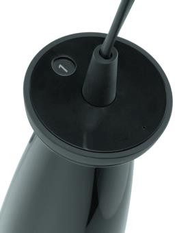

Погружной блендер BORK B704

Технические характеристики
Мощность: 700 Вт.
Количество скоростей: 5
Кол-во оборотов: макс. 15 000 об/мин.
Материал корпуса: Пластик
Количество насадок: 3 шт.
Чаша-измельчитель
Объем мерного кувшина: 1200 мл.
Длинна сетевого шнура: 1,5 м.
Цвет: Черный
Габариты блендера (В×Ш×Г): 38×7×7 см.
Габариты подставки (В×Ш×Г): 3×12×12 см. Вес: 0,9 кг.
Страна производитель: Корея
Гарантийный срок: 12 мес.
Устройство
Особая форма ручки, с расширением в верхней части, позволяет надежно удерживать блендер в руке.
Наличие в блендере 5-и скоростей позволяет выбрать оптимальный режим для приготовления конкретного блюда и добиться
наилучшего результата, от смешивания до взбивания.
Индикатор скорости четко отображается на вертикальной части блендера.
Прорезиненный регулятор скорости и кнопка
включения/выключения позволяют использовать блендер даже мокрыми руками, что не редко бывает на кухне.
Центральное крепление шнура позволяет ему не мешать пользователю при эксплуатации.
